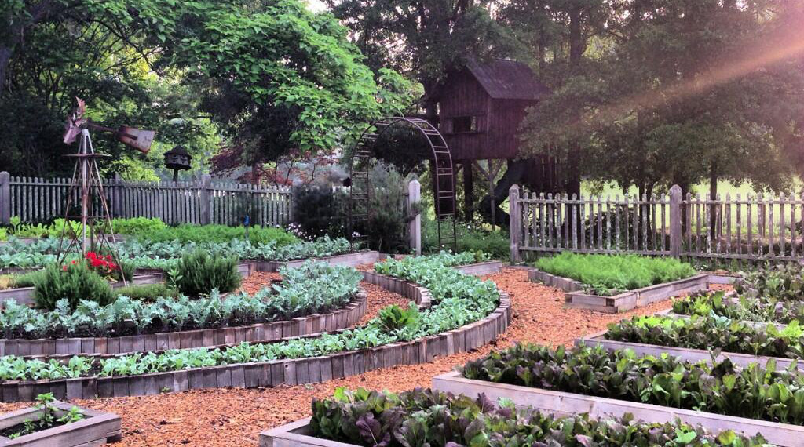

<div class="company">
  <div class="jumbotron">
    <h1 class="text-center">anyHarvest</h2>
    <div class="container">
      
    </div>
    <div class="container">
    <h4 class="text-center">what we do</h4>
    <div class="hl"></div>
    <p class="col-md-offset-2 col-md-8 text-justify">anyHarvest was created to help every community increase their food security by producing their own healthy food and have a marketplace app to sell.  is developing a working, sustainably managed, farmer's marketplace app. anyHarvest serves as the backdrop for an program that offers farmers and future farmers, urban food producers, community leaders, and citizens the opportunity commercially produce high-value, nutrient-rich food and offer their products in a local marketplace.</p>
    </div>
  </div>
</div>
